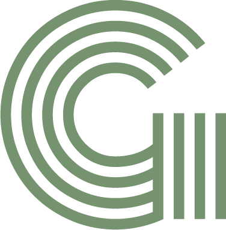
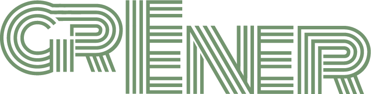

Contents
01 The brand
Greener is my own brand as a designer. It's the name on everything I make, from brands and websites to apps and the odd physical object, and it should feel like one person made all of it.
02 Logo story
The Greener wordmark began when I was 14 or 15: a striped, multi-line green logo where the G flowed into the R and the letters sat on two baselines. Years later I came back to it, kept the ideas that worked, and redrew the whole thing from scratch as a clean vector.


The originalStriped, multi-line, green. Started when I was 14.

RedrawnSolid, vector, with the details made deliberate.
03 Logo anatomy
04 Logo system
WordmarkThe main logo. The G sits apart behind a thin gap; the two Es stack into one tall E. Use it wherever there's room.
G monogramFor small spaces: favicons, stamps, patterns and debossing.
InverseGreen or paper on ink. Never pure white.
05 Clear space and sizes
Keep a clear space of at least x on every side, where x is the height of the G's top bar. Nothing else goes in that space.
Wordmark minimum90 px on screen · 25 mm in print
Monogram minimum16 px on screen · 5 mm in print
06 Logo on backgrounds
Ink on light, paper or green on dark. On photos, place the logo over a calm area or on a solid panel.
✓Ink on paper
✓Ink on green
✓Paper on ink
Green on ink
07 Colour
08 Colour pairs
Body text must meet WCAG AA: a contrast ratio of at least 4.5:1. Paper on green is for large display type only.
09 Typography
Archivo · Google Fonts, free
Weights 400 to 800, widths 62 to 125. Headlines run wide and heavy with tight spacing; body text stays regular and normal width.
ABCDEFGHIJKLMNOPQRSTUVWXYZ
abcdefghijklmnopqrstuvwxyz 0123456789